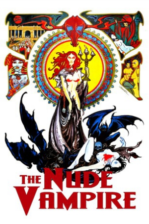

Also known as:La Vampire Nue (original title)
Country:France, 85 minutes
Spoken languages:French
Genres:Horror, Sci-Fi
Director(s):Jean Rollin
Writer(s):Jean Rollin, Serge Moati
Video Codec:Unknown
Number: 2891


Certification:
Storyline:
A young man falls in love with a beautiful woman being chased by sinister masked figures at night. He tries to track her down, and learns she's being held captive by his father and colleagues who believe she's a vampire.
Cast:

Medium: Bluray,
Loaned: No
Aspect ratio: Unknown